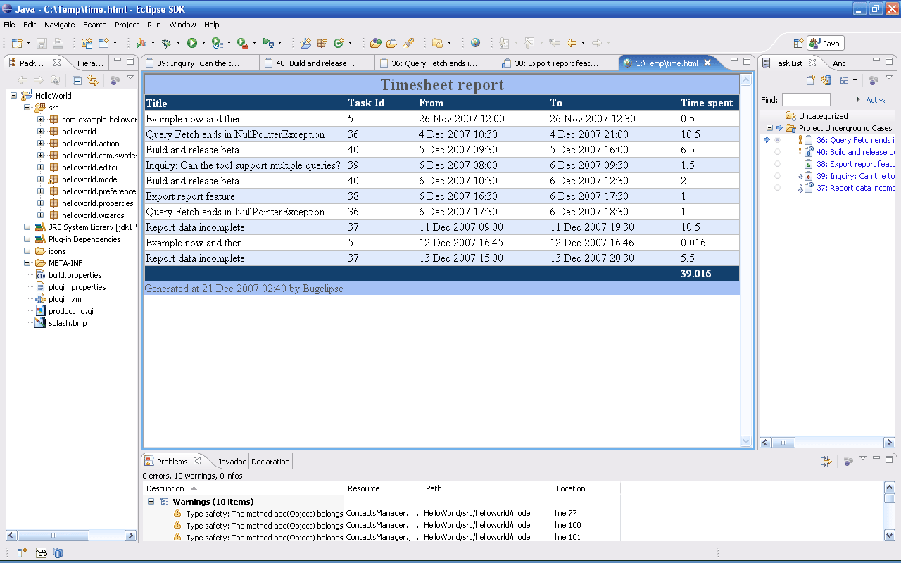

Timesheet
- Since Bugclipse helps track time spent on various tasks, it
is useful to report on the total time spent in a period in the form of
a timesheet
- Select any FogBugz query/task and select
Timesheet from the context menu. The menu also provides various options
for the format of the report
- The timesheet lists every
interval tracked in the repository within the given date range and sums
up the total work in the last row
